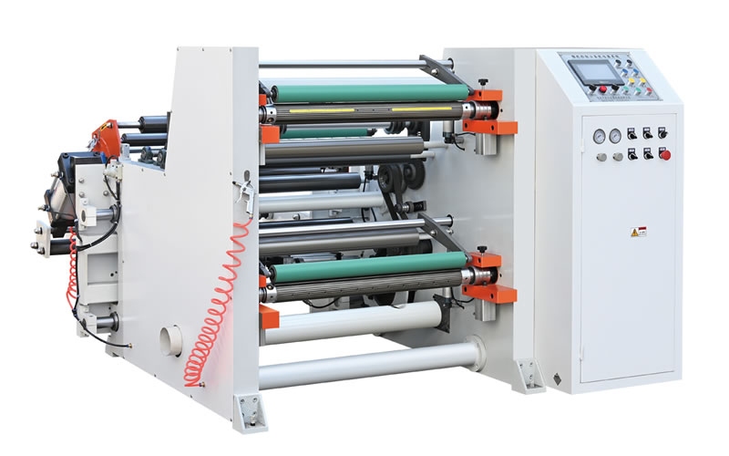

<div>
  <div class="row material-processing-container">
    <div class="col-md text">
      Opracovanie materiálov : <br /><br />
      Prevíjanie flexibilných izolačných materiálov. <br /><br />
      Rezanie na šírky a pásky od 20 mm Delenie dosiek pílením, prírezy,
      hranoly. <br /><br />
      Precízne opracovanie podľa požiadaviek zákazníkov. <br /><br />
      Výrobky podľa výkresu.
    </div>
    <div class="col-md image">
      
    </div>
  </div>
</div>
